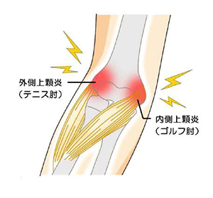
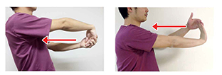

上腕骨外側上顆炎（テニス肘）・ 上腕骨内側上顆炎（ゴルフ肘）
上腕骨外側上顆炎（テニス肘）・上腕骨内側上顆炎（ゴルフ肘）とは
肘の外側には手首や指を伸ばす筋肉の腱があり、肘の内側には手首や肘を曲げたり内側にねじったりする筋肉の腱がついています。
上腕骨外側上顆炎（テニス肘）と上腕骨内側上顆炎（ゴルフ肘）は、前腕の腱の付着部に炎症が起こることで発症します。

症状
テニス肘
- 肘の外側の痛み
- 物をつかむ、タオルを絞る、ドアノブを回す動作で痛む
- 手首を反らす・持ち上げる動作で痛みが強くなる
- 安静時は痛みが少ないが、使うと再発しやすい
ゴルフ肘
- 肘の内側の痛み
- 手首を曲げる・物を握る動作で痛む
- 重い物を持つと痛みが出る
- 進行すると前腕や手指に違和感が出ることもある
原因
テニス肘
- 手首や指を伸ばす筋肉の使い過ぎ
- テニスのバックハンド動作
- 手首を反らしたり、物を持ち上げたりする動作の繰り返し
- 加齢による筋腱の劣化
ゴルフ肘
- 手首や指を曲げる筋肉の使い過ぎ
- ゴルフのスイング動作
- 重量物の持ち運び、物を引っ張る作業の繰り返し
- 加齢による筋腱の劣化
治療
急性期は、安静、装具固定、ストレッチ、痛め止め・湿布の使用、ステロイド注射、物理療法などを行います。
回復期は、リハビリテーション（筋力強化、ストレッチなどの機能回復）を実施します。
急性期に自宅でできるセルフケア
手のひらが下を向くよう腕をまっすぐ伸ばし、もう一方の手で指をつかんで体側にひっぱります。
痛みが出ない範囲でゆっくりとストレッチをしましょう。
